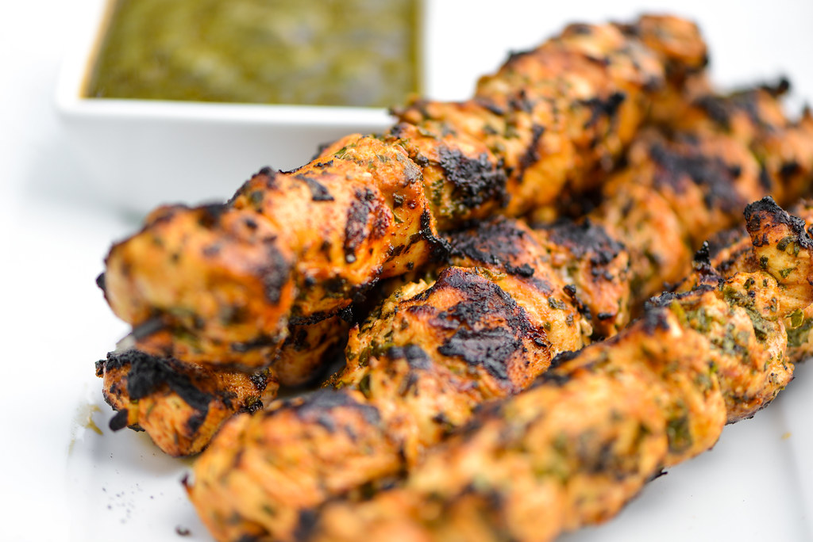

Moroccan Chicken Brochettes

Description
These flavor-packed grilled Moroccan chicken brochettes make for a
perfect summer dinner, and they're easy enough for weeknights!
Serve them with rice and your favorite veg side.
Ingredients
Garlic sauce
- 4 garlic cloves, finely chopped
- Kosher salt
- 1/3 cup olive oil
- 3 tablespoons plain yogurt
Chicken
- 2 pounds skinless, boneless chicken thighs, cut into 2" pieces
- 2 garlic cloves, chopped
- 1/2 cup finely chopped fresh flat-leaf parsley
- 2 teaspoons ground cumin
- 2 teaspoons paprika
- 1/4 teaspoon crushed red pepper flakes
- Kosher salt
- Vegitable oil (for grilling)
- Warm pita bread, labneh (Lebanese strained yogurt),
chopped tomatoes, and fresh mint leaves (for serving)
Instructions
Garlic sauce
- Place garlic in a mortar; season with salt and pound to a
very fine paste. (Alternatively, place garlic on a cutting
board, season with salt, and mash with the side of a chef's knife.)
Transfer garlic paste to a small bowl and gradually whisk in oil.
-
Very gradually whisk yogurt into garlic mixture until emulsified.
(Add too fast and sauce will break. If it does break, gradually
whisk in 1 tsp. water just before serving.)
-
DO AHEAD: Garlic sauce can be made 6 hours ahead. Cover and chill.
Chicken
-
Toss chicken, garlic, parsley, cumin, paprika, and red pepper
flakes in a medium bowl; season with salt. Cover and chill at
least 2 hours.
-
Prepare grill for medium-high heat and oil grate. Thread chicken
onto skewers. Grill, turning occasionally, until cooked through,
8-12 minutes. Serve with garlic sauce, pita bread, labneh, tomatoes,
and mint.
-
DO AHEAD: Chicken can be marinated 12 hours ahead. Keep chilled.